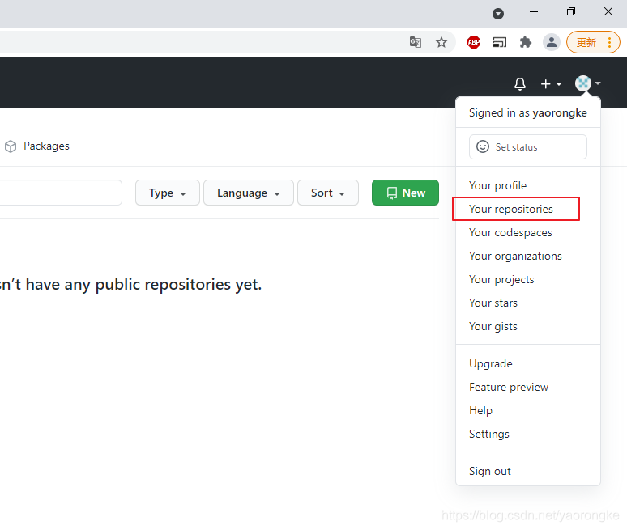
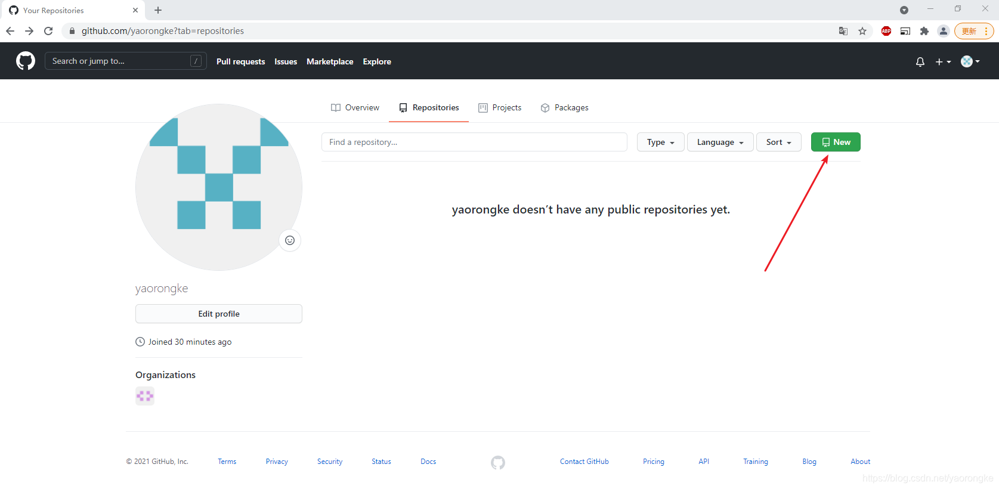
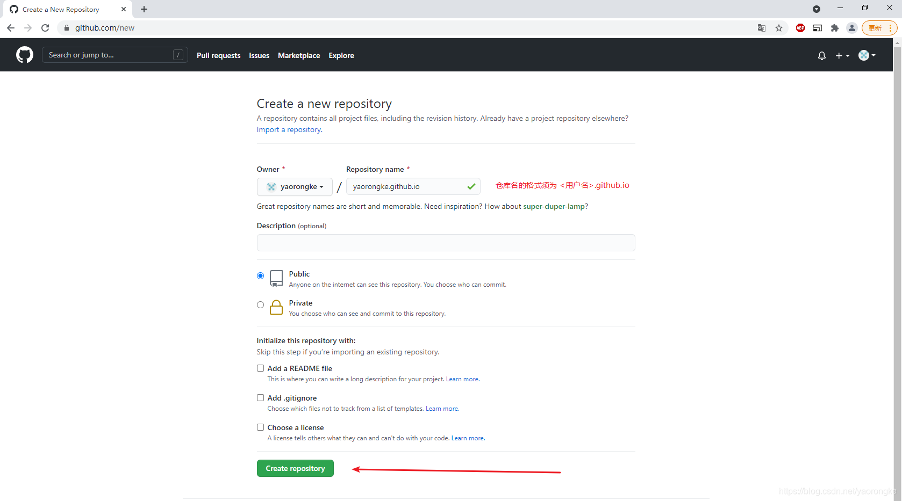
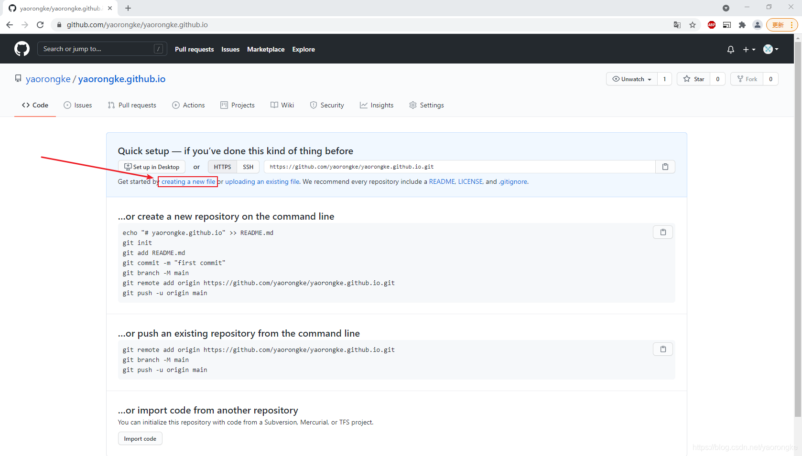
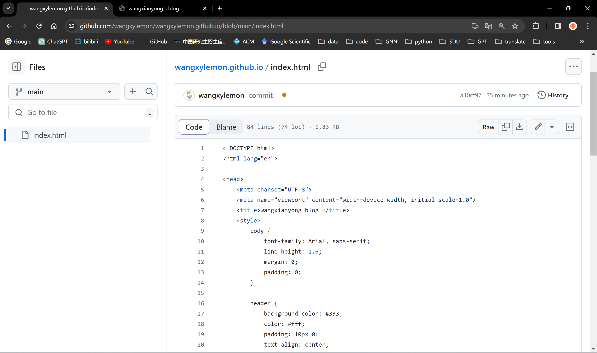

实验三实验报告
实验题目
实验目的
熟悉使用主流云平台并搭建个人博客或者网站。 具体包括： 参考方案：基于主流云平台，设计、实现个人博客或者网站的搭建，撰写实验报告（附带网站链接并可以访问），并在网站上呈现此次实验报告。
硬件环境
联网计算机一台
软件环境
VSCode、Windows11
结论分析与体会：
GitHub Pages 提供了一个简单易用的方式来搭建个人博客。通过简单的操作，就能在互联网上展示自己的作品和想法，这对于不擅长网站开发的人来说是非常友好的。
GitHub Pages 是免费的静态网站托管服务，不需要支付额外费用。这让我可以放心地将自己的博客内容托管在 GitHub 上，并且享受到 GitHub 提供的稳定的托管服务。
学习与实践： 在搭建博客的过程中，我学到了很多与网站开发相关的知识，包括 HTML、CSS、Git 版本控制等。通过实际操作，我更加深入地理解了这些技术，也提升了我的技能水平。
实验步骤与内容
一、准备工作
1. Github账号
需要有一个GitHub账号，没有到 官网 申请一个。 注册很简单，可以参考 GitHub申请账号
2. 安装git
在自己电脑上安装好Git，hexo部署到GitHub时要用。 网上找篇教程或者参考 Git安装(Windows)
3. 安装Node.js
在自己电脑上安装好NodeJS，Hexo是基于NodeJS编写的，所以需要安装NodeJS和npm工具。 网上找篇教程或者参考 NodeJS安装及配置(Windows)
二、创建仓库
在GitHub上创建一个新的代码仓库用于保存我们的网页。 点击Your repositories，进入仓库页面。
点击New按钮，进入仓库创建页面。
填写仓库名，格式必须为<用户名>.github.io，然后点击Create repository。
点击creating a new file创建一个新文件，作为我们网站的主页。
新文件的名字必须为index.html，内容先随便写一个简单的，填写之后点击Commit new file提交。
GitHub Pages中找到我们主页的地址为 https://wangxylemon.github.io/